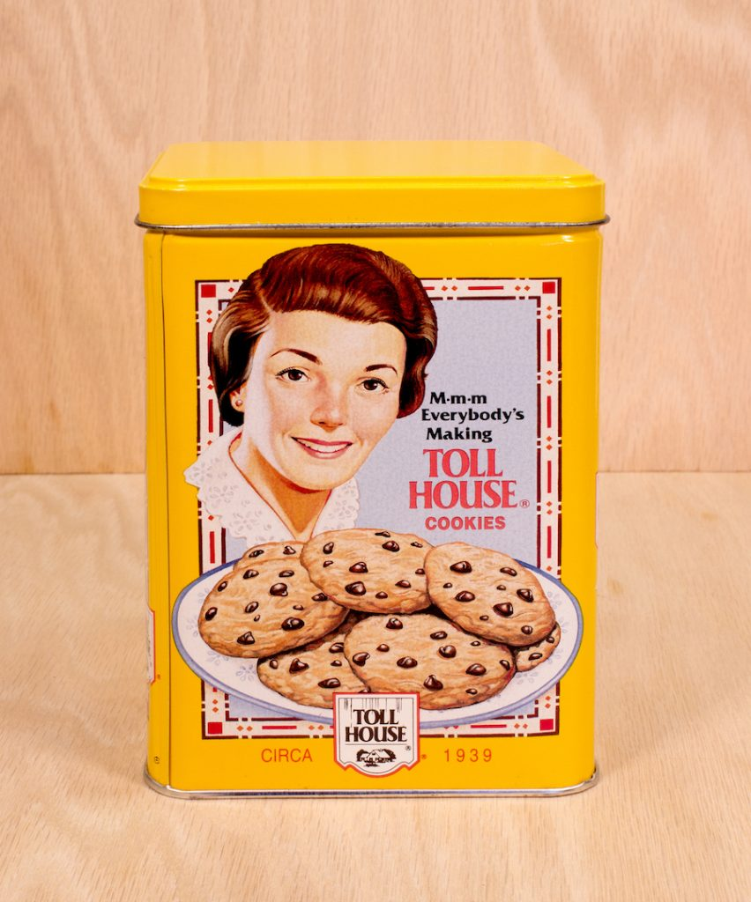

Chocloate chip cookies were invented in the 1930's by Ruth Wakefield in Whitman, Massachusetts. She created them by adding bits of a Nestle chocolate bar into cookie dough. She expected the chocolate to melt into the dough but the bits held their shape during the baking process. The recipe became famous and is now one of the most popular sweet treats in the world.
read here for more information on the history cookie history
Chocolate chip cookies are the best treat because they balance the sweetness of cookie dough with the rich flavor of chocolate. They can be enjoyed on the go as they are very small and dont leave a mess. They can be baked in different ways to be either crunchier or more soft and chewy. Above all they offer comfort and remind people of good memories baking with their family and friends.
| Type | Description |
|---|---|
| cookie cake | Large circular cookie that often has icing |
| Traditional | about the size of your palm and has little bits of Chocloate |
| oatmeal | looks like a normal chcocolate chip cookie but uses oatmeal instead of traditional cookie dough |
read here for some different ways to bake chocolate hip cookies cookie recipes